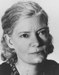

Solcu bir aktivist olan Dorothy Day (1897–1980) açlar ve unutulmuşlar için mücadele etti. Catholic Worker (Katolik İşçi) gazetesinin kurucusuydu. Büyük Buhran sonrası sosyal değişim ve pasifizmi savunan güçlü bir ses oldu. Yaşadığı dönemde görüşleri tehlikeli bulunmuş ve FBI tarafından takibe alınmıştı. Ancak pek çok Katolik onu bir kahraman olarak görüyordu. 2000 yılında azize ilan edilmesi bile teklif edildi.

Day, Brooklyn’de doğdu. Çocukken sık sık seyahat etti. 1906 yılında San Fransisco’daydı. Yaşanan büyük depremden sağ kurtuldu. Ailesi dindar değildi. Hayatının ilk birkaç on yılında Day de pek dindar sayılmazdı. Genç bir kolej öğrencisi olarak sosyal politika ile ilgileniyordu. 1916 yılında okulu bıraktı. Radikal gazete The Call (Çağrı) için muhabir olarak çalışmaya başladı.
1920’lerde New York City’deki radikal politik hareketlerin cazibesine kapıldı. Bohem bir hayat tarzı benimsedi. Çok sayıda sevgilisi oldu. Yasa dışı kürtaj yaptırdı. Daha sonra bundan büyük pişmanlık duyacaktı.
1927 yılında yeniden hamile kaldı. Dini bir uyanış yaşadı ve Katolik oldu. Hayatının kalan kısmını inanmış ve teolojik açıdan muhafazakar bir Katolik olarak geçirecekti. Kilisenin kürtaj karşıtı tavrının coşkulu bir destekçisi oldu.
Day, Katolik olsa da politik ideallerine bağlı kalmaya devam etti. Peter Maurin (1877–1949) ile birlikte 1933 yılının Mayıs ayında Catolic Worker’ı çıkararak politik idealleri ile Katolik inancını birleştirmiş oldu. Böylece solcu ve toplumsal meselelere duyarlı dindar bir hareket yaratmayı umuyordu. Gazeteye ek olarak evsizler için barınaklar, klinikler ve sığınaklar açtı.
Day, Katolikler arasında bile tartışmalı bir figürdü. Bunun en büyük sebebi solcu ve savaş karşıtı düşünceleriydi. II. Dünya Savaşı sırasındaki askere alınmalara ve daha sonra Vietnam Savaşı’na karşı çıktı. New York Times’da çıkan ölüm ilanına göre Abbie Hoffman (1936–1989) ondan bahsederken “ilk Hippi” ifadesini kullanmıştı.
Seksen üç yaşındaki ölümünün ardından, New York City başpiskoposu John Cardinal O’Connor (1920–2000) tarafından azize olması önerildi.
Ek Bilgiler
1- 1996 yapımı “Entertaining Angels: The Dorothy Day Story” (Keyifli Melekler: Dorothy Day’in Hikayesi) isimli filmde Moira Kelly (1968–) tarafından canlandırıldı.
2- “Catholic Worker” gazetesi günümüzde aylık olarak yayınlanmaktadır. Fiyatı halen bir senttir.
3- Day hayatının büyük bölümünde vergi ödemeyi reddetti. Oy kullanmaya ve Amerikan bayrağını selamlamaya karşı çıktı. Savaşı ve tanık olduğu sosyal adaletsizliği bu şekilde protesto ediyordu.